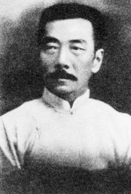

陈独秀
-
陈独秀
1879-1942
中国共产党创始人和早期领导人之一
- 陈独秀创办《新青年》，发一代先声，是五四运动的发起者。
- 陈独秀有很多真知灼见，却也不乏极端言论。书生意气，却又投身政治，一生命运起伏，晚年的陈独秀对自己早年的言行做了反思。
傅斯年
-
傅斯年
1896-1950
著名历史学家，古典文学研究专家，教育家，学术领导人。五四运动学生领袖之一、中央研究院历史语言研究所的创办者
- 民国七年(1918年)夏，受到民主与科学新思潮的影响，与罗家伦、毛准等组织新潮社，创办《新潮》月刊，提倡新文化，影响颇广，从而成为北大学生会领袖之一。
- 傅斯年曾任中山大学、北京大学等校教授，北大文科研究所所长、代理校长(1945-1946)和台湾大学(1949-1950)校长。 傅斯年任历史语言所所长二十三年，培养了大批历史、语言、考古、人类学等专门人才，组织出版学术著作70余种，在经费、设备、制度等方面都为历史语言所的发展做出了重要贡献。
匡互生
-
匡互生
1891-1933
五四运动天安门大会和会后游行的三位主要组织者之一
- 1891年11月1日生于湖南邵阳东乡天台山，他"奋然而起，作点革命的工作"，始于辛亥之役。辛亥革命时，曾跟长沙革命军攻巡抚衙门。1913年在邵阳中学读书时作文痛骂北洋军阀。匡互生来自清末民初革新风气最为硬朗的省份之一湖南省，当时的湖南省可以说是群星灿烂。
李大钊
-
李大钊
1889-1927
中国共产党的主要创始人之一，中国共产主义运动的先驱，伟大的马克思主义者，杰出的无产阶级革命家
- 李大钊对言论自由的看法是五四精神的重要表现。他是学识渊博、勇于开拓的著名学者，在中国共产主义运动和民族解放事业中，占有崇高的历史地位。
陈寅恪
-
陈寅恪
1890-1969
中国现代最负盛名的集历史学家、古典文学研究家、语言学家、诗人于一身的百年难见的人物，与叶企孙、潘光旦、梅贻琦一起被列为清华百年历史上四大哲人，与吕思勉、陈垣、钱穆并称为“前辈史学四大家”
- 民国十八年（1929年），陈寅恪在为王国维所写的碑文中提出了“独立之精神，自由之思想”，完整体现了“五四精神”，可以作为我们读书、求知最好的座右铭，也是教育培养人才应当遵循的原则。
胡适
-
胡适
1891-1962
思想家、文学家、哲学家。安徽绩溪人，以倡导"白话文"、领导新文化运动闻名于世
- 五四运动的旗手，中国白话文运动的先驱者，一生坚持使用白话文，写白话诗。“大胆假设，小心求证”的治学方法，启蒙了一代学人。是五四运动中，开一代风气之先的人物。

鲁迅
-
周树人
1881-1936
中国著名文学家、思想家、革命家
- “鲁迅”是他1918年发表《狂人日记》时所用的笔名，也是他影响最为广泛的笔名，浙江绍兴人。著名文学家、思想家、民主战士，五四新文化运动的重要参与者，中国现代文学的奠基人。
罗家伦
-
罗家伦
1897-1969
"五四运动"的学生领袖 和命名者，中国近代著名的教育家、思想家和社会活动家。
- 1919年，在陈独秀、胡适支持下，与傅斯年、徐彦之成立新潮社，出版《新潮》月刊 。同年，当选为北京学生界代表，到上海参加全国学联成立大会，支持新文化运动 。五四运动中，亲笔起草了唯一的印刷传单《北京学界全体宣言》，提出了"外争国权，内除国贼"的口号 。
毛泽东
-
毛泽东
1893-1976
伟大的马克思主义者，伟大的无产阶级革命家、战略家、理论家，是马克思主义中国化的伟大开拓者，中国共产党、中国人民解放军和中华人民共和国的主要缔造者和领导人。
- 1919年时的毛泽东在五四运动期间，他领导了湖南的群众运动。毛泽东在《湘江评论》上发表的最重要的文章，是长篇论文《民众的大联合》，连载于第二、三、四期。在这篇文章中，他第一次公开赞颂了俄国十月革命及其影响。
周恩来
-
周恩来
1898-1976
伟大的马克思主义者，伟大的无产阶级革命家、政治家、军事家、外交家，党和国家主要领导人之一
- 1917年在天津南开学校毕业后赴日本求学，开始接触马克思主义，思想发生重要转折。1919年回国，9月入南开大学，在五四运动中成为天津学生界的领导人，并与运动中的其他活动分子共同组织进步团体觉悟社